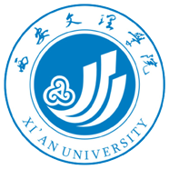

IOS Club是一个跨越专业与课堂的IOS开发爱好者的社团，在这里我们可以体验到跨越学科体验的IOS魔力，可以创造一个你心目中所理想的APP，同时可以与全球的IOS开发者们交流梦想。 IOS Club的活动内容有对IOS的动手实践、内部交流、对兴趣爱好的发展当然社员之间也可以相互学习交流，也是一个认识更多新朋友的机会。 在这里你不需要像课堂上那样死板的学习，相反的我们可以根据自己的爱好来进行学习，在快乐中学习到新的知识，也不会“头疼“的考试来打扰我们，我们所要做的就是永远保持一颗热爱的心去面对他。 我们还会定期进行讲座活动，我们会请到IOS开发达人为我们面对面的进行交流，让我们能够更好的了解IOS，逐步的我们便能够自主的开发程序。 IOS Club在全国多所大学都有设立，其官方活动有很多，如冬季和夏季的夏令营，我们可以根据自身条件选择参加，官方还会定期分享最新的技术、创新创业的分享、开发相关创意的分享，同时WWDC奖学金获得者和业界大咖也会毫不吝啬的分享他们的经验给我们，让我们能更好的学到有关IOS的相关知识。
指导老师
杨冰
邮箱
cusbi@163.com